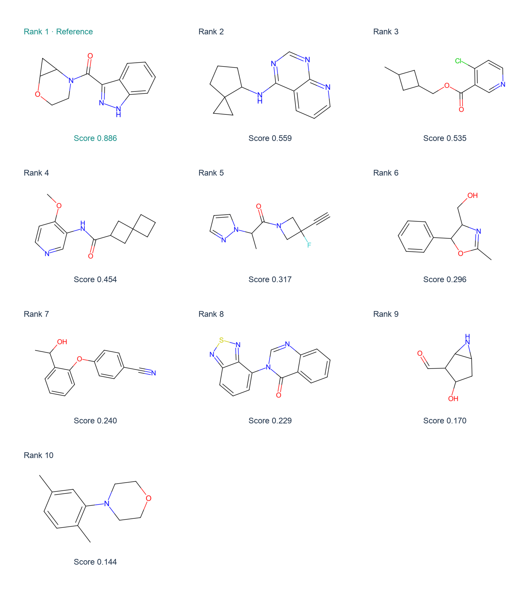

结构检索：IR + Raman + NMR
查看4,096 候选结构评测，比较嵌入检索、前 32 名重排和全库匹配的结果及各自查询数。
按候选结构与输入谱图的一致性进行排序。
1,024 候选结构评测
使用OpenMolSpec 四谱模型，每个查询的真结构均在库中。嵌入检索第一名命中 63/64，对前 16 名用 ITM 重排后命中 64/64。在预先选定的前 8 个查询上，对全库逐一做 ITM 打分，第一名命中 8/8。各模型共用查询和候选，其中 61 个查询有同分子式干扰结构。
输入是什么
Field |
Meaning |
|---|---|
|
每个可见通道 1024 个强度点，按 400→4000 cm⁻¹ 排列，并采用 checkpoint 的归一化。 |
|
逐原子位移数组（ppm），参考 ID 和归一化必须与 checkpoint 一致。 |
|
用于排序的分子候选库。 |
输出是什么
Field |
Meaning |
|---|---|
|
候选结构 ID，以及相似度或 ITM 正类分数。 |
|
排序指标、候选池大小及样本来源构成。 |
真实运行案例
下面展示示例的输入、预测与参考。下载 JSON 可获取完整数值数组及更多示例。

SVG · PNG · Full input/output JSON


展开查看实际输入与输出字段
{
"sample_id": "ZINCV2-ZINC000646741030",
"input": {
"ir": {
"length": 1024,
"first_values": [
0.15220004320144653,
0.190755695104599,
0.2037702202796936,
0.1804114133119583
]
},
"raman": {
"length": 1024,
"first_values": [
0.04284051060676575,
0.0596662312746048,
0.059223152697086334,
0.04435715824365616
]
},
"nmr_h_shifts_ppm": {
"length": 13,
"first_values": [
0.40027499198913574,
0.70107501745224,
3.4114749431610107,
3.4215750694274902
]
},
"nmr_c_shifts_ppm": {
"length": 13,
"first_values": [
17.115774154663086,
31.026575088500977,
43.290775299072266,
55.238773345947266
]
}
},
"reference_smiles": "O=C(c1n[nH]c2ccccc12)N1CCOC2CC21",
"ranked_candidates": {
"length": 10,
"first_values": [
{
"smiles": "O=C(c1n[nH]c2ccccc12)N1CCOC2CC21",
"score": 0.8860309720039368,
"reference_match": true
},
{
"smiles": "c1cnc2ncnc(NC3CCCC34CC4)c2c1",
"score": 0.5585482716560364,
"reference_match": false
},
{
"smiles": "CC1CC(COC(=O)c2cnccc2Cl)C1",
"score": 0.5353757739067078,
"reference_match": false
},
{
"smiles": "COc1ccncc1NC(=O)C1CC2(CCC2)C1",
"score": 0.4536983370780945,
"reference_match": false
}
]
}
}
实际评测结果
Dataset / scope |
Model / variant |
Metric |
Value |
|---|---|---|---|
recorded sample |
recorded model |
recall_at_1 |
1 |
recorded sample |
recorded model |
recall_at_5 |
1 |
recorded sample |
recorded model |
recall_at_10 |
1 |
recorded sample |
recorded model |
mrr |
1 |
recorded sample |
recorded model |
queries |
16 |
recorded sample |
recorded model |
candidate_pool |
16 |
recorded sample |
recorded model |
unique_candidates |
16 |
recorded sample |
recorded model |
tie_policy |
stable_candidate_order |
模型与方法
openSpec 模型通过 Vib2Mol 编码谱通道。生成使用 beam search 和分子匹配分数；检索比较嵌入，候选重排使用匹配头。
生成报告 top-k 准确率，排序报告 Recall@k 与 MRR。
复现方式
Notebook with executed figures · Quick Start
python -m openmolspec_bench run --workspace /path/to/OpenMolSpec \
--tasks vibrational.retrieval.hc --limit 8 --output results/vibrational-retrieval-hc-new.json
调用模型与微调
from openmolspec.model import Vib2Mol
model = Vib2Mol(root='/path/to/portable-models',
python='/path/to/vibrational-env/bin/python')
result = model.retrieve(inputs, candidate_smiles,
rerank=False, allow_missing_modalities=False)
通过 openSpec／Vib2Mol 作者训练流程进行适配。准备谱—结构对齐的 LMDB，保留 H/C 参考和归一化，确保 train/val 分组独立。检索采用双向对比交叉熵与配对分类交叉熵；生成使用分子 token 自回归交叉熵。性质回归按其训练配置保留目标变换和回归准则。SDK 提供推理，相关训练通过作者实现执行。
来源报告与 SHA-256 指纹
vibrational_ranked_examples_20261117.json — SHA-256
b7e464aa11e85fdcae7245d987d92f272d6c1a5e47d697734df17d26731744e3
参考文献
OpenMolSpec contributors. openSpec models and benchmark training workflows. Source archive, v1.0 (2026). Source
OpenMolSpec contributors. OpenMolSpec: Chemical spectroscopy datasets, models and learning workflows. Software release v1.0 (2026). Source
Yuan, M., Zou, Z. & Hu, W. QMe14S, A Comprehensive and Efficient Spectral Dataset for Small Organic Molecules. arXiv:2501.18876 (2025). Source
Zou, Z., Zhang, Y., Liang, L., Wei, M., Leng, J., Jiang, J., Luo, Y. & Hu, W. A deep learning model for predicting selected organic molecular spectra. Nature Computational Science 3, 957–964 (2023). doi:10.1038/s43588-023-00550-y. Source